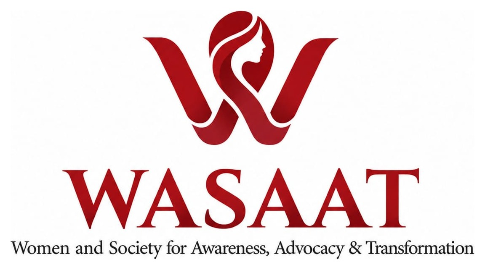

Community
Creating spaces where women can speak, listen, learn, and share lived experiences without judgment or hierarchy.

Women and Society for Awareness, Advocacy & Transformation
Creating space for women to question, understand, document, and transform society.
WASAAT is an independent, women-led platform creating thoughtful spaces for Muslim Bengali women to engage with society, culture, health, history, rights and public issues. We connect community dialogue with research, documentation and public advocacy.
Creating spaces where women can speak, listen, learn, and share lived experiences without judgment or hierarchy.
Documenting women's experiences and producing thoughtful research, conversations, and educational resources.
Using evidence, storytelling, and community voices to contribute to wider conversations about women and society.
WASAAT brings together community dialogue, digital media, and documentation through three active initiatives.
Community conversations where women discuss social, cultural, personal, and public issues in an open and non-judgmental environment.
View archive ↗A podcast and digital conversation series featuring women professionals, academics, activists and researchers discussing issues affecting women and society.
Visit YouTube ↗A digital archive documenting and preserving women's participation and experiences during Bangladesh's July uprising.
Visit archive ↗Our work spans interconnected issues that shape women's lives and participation in society.
WASAAT increasingly works through focused thematic seasons. Research, podcasts, community conversations, documentation and public communication explore one important issue from multiple perspectives.
WASAAT is led by women with backgrounds in research, academia, advocacy, healthcare and communications.
PhD Researcher, Political Scientist, Community Activist & Writer
Senior Lecturer, Women & Human Rights Activist & Writer
Cultural Analyst & Strategic Communications
Researcher, Healthcare Advocate, Human Rights Activist & Writer
We believe meaningful social change is built through collaboration. WASAAT welcomes partnerships that strengthen women's knowledge, voices, participation, and access to opportunities.